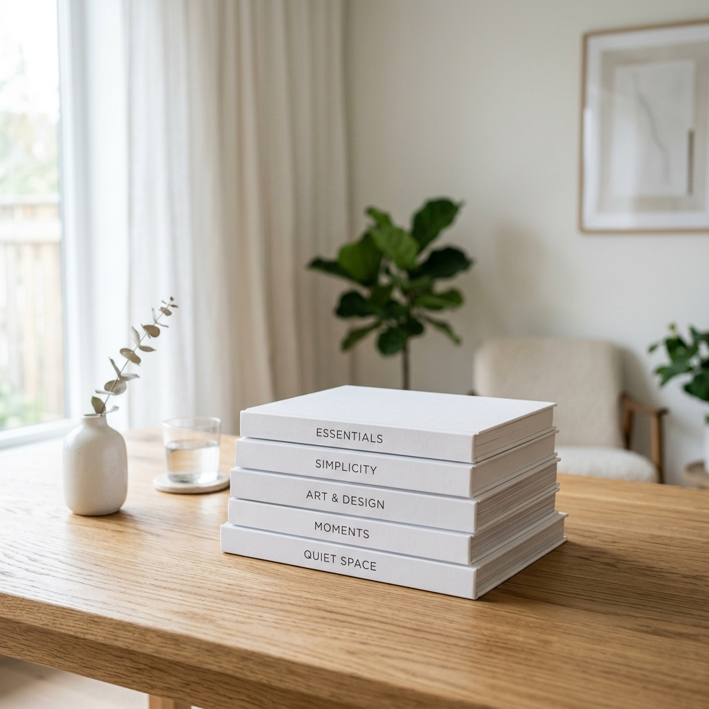

PILAS Y COLAS
EN JAVA
PROGRAMACIÓN BÁSICA • UTN FRSF
PROGRAMACIÓN BÁSICA • UTN FRSF
CONCEPTO LIFO
Es una colección de elementos donde el acceso se limita a un solo extremo: la cima.
LIFO
Last-In, First-Out (Último en entrar, primero en salir).

Agrega un objeto a la parte superior de la pila.
Elimina y devuelve el objeto de la cima.
Muestra el elemento superior sin extraerlo.
En Java, la pila se implementa mediante la clase concreta Stack perteneciente al paquete java.util.
<T> para definir el tipo de dato.new.import java.util.Stack; // Sintaxis de declaración Stack<String> pila = new Stack<>();
CONCEPTO FIFO
Los elementos se procesan en el orden estricto de llegada. El acceso ocurre por ambos extremos.
FIFO
First-In, First-Out (Primero en entrar, primero en salir).

Inserta un elemento al final de la cola.
Retira y devuelve el frente de la cola.
Inspecciona el primer elemento sin procesarlo.
A diferencia de Stack, Queue es una interfaz. No podemos instanciarla directamente.
LinkedList.java.util.import java.util.Queue; import java.util.LinkedList; // Declaración mediante interfaz Queue<Integer> cola = new LinkedList<>();
| Atributo | Pila (Stack) | Cola (Queue) |
|---|---|---|
| Principio de orden | LIFO (El último es el primero) | FIFO (El primero es el primero) |
| Lógica real | Pila de platos, Ctrl+Z | Fila del banco, Impresora |
| Sintaxis Java | new Stack<T>(); |
new LinkedList<T>(); |
Analizamos el texto usando un ciclo while. Si intentamos cerrar cuando la pila está vacía, el proceso se detiene marcando el error.
Controlamos la salida directamente en la condición del ciclo para asegurar una programación estructurada.
String cod = ")("; Stack<Character> p = new Stack<>(); boolean valido = true; int i = 0; while(i < cod.length() && valido) { char c = cod.charAt(i); if(c == '(') { p.push(c); } else if(c == ')') { if(p.isEmpty()) { valido = false; } else { p.pop(); } } i++; } if(valido) valido = p.isEmpty();
Simulamos una cola de espera donde los clientes son atendidos en el orden exacto en que ingresaron al sistema.
Garantiza justicia y orden en el procesamiento de datos.
Queue<String> q = new LinkedList<>(); // Ingresan clientes q.offer("Juan"); q.offer("Maria"); // Atendemos al primero (Juan) String atendido = q.poll(); System.out.println("Atendiendo a: " + atendido);
Úsala cuando necesites volver sobre tus pasos o invertir el orden de algo.
Úsala para transmitir datos de forma ordenada o gestionar procesos en espera.
¡Muchas gracias por su atención!
UTN SANTA FE - PROGRAMACIÓN BÁSICA
TUTI